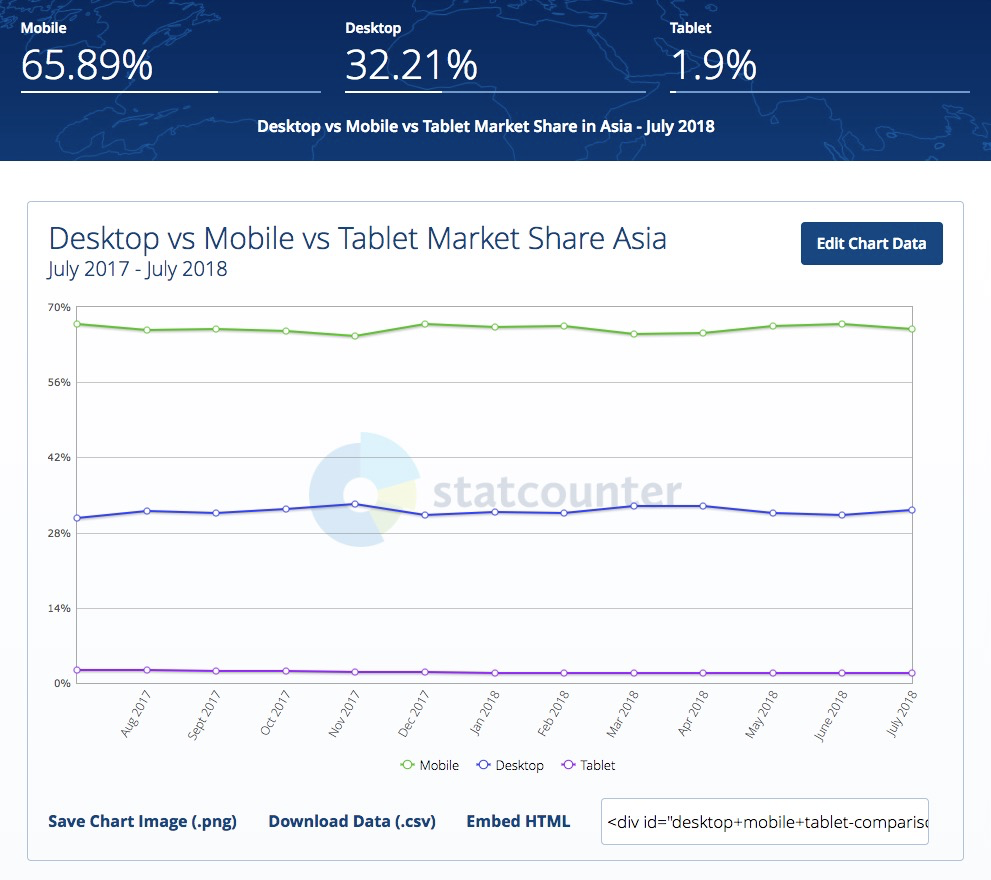
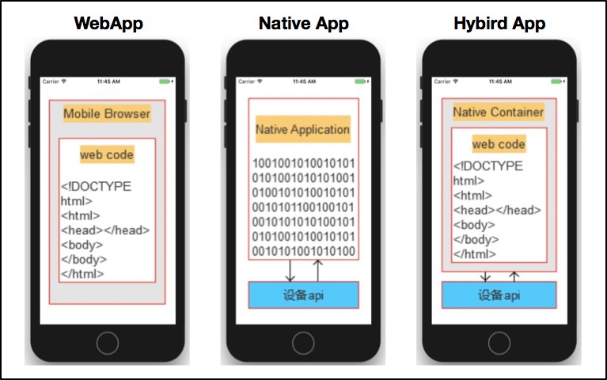
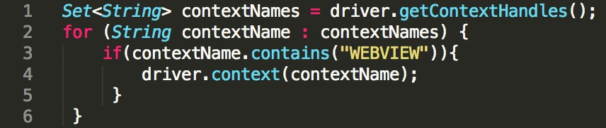

- 00 开篇词 从“小工”到“专家”，我的软件测试修炼之道.md.html
- 01 你真的懂测试吗？从“用户登录”测试谈起.md.html
- 02 如何设计一个“好的”测试用例？.md.html
- 03 什么是单元测试？如何做好单元测试？.md.html
- 04 为什么要做自动化测试？什么样的项目适合做自动化测试？.md.html
- 05 你知道软件开发各阶段都有哪些自动化测试技术吗？.md.html
- 06 你真的懂测试覆盖率吗？.md.html
- 07 如何高效填写软件缺陷报告？.md.html
- 08 以终为始，如何才能做好测试计划？.md.html
- 09 软件测试工程师的核心竞争力是什么？.md.html
- 10 软件测试工程师需要掌握的非测试知识有哪些？.md.html
- 11 互联网产品的测试策略应该如何设计？.md.html
- 12 从0到1：你的第一个GUI自动化测试.md.html
- 13 效率为王：脚本与数据的解耦 + Page Object模型.md.html
- 14 更接近业务的抽象：让自动化测试脚本更好地描述业务.md.html
- 15 过不了的坎：聊聊GUI自动化过程中的测试数据.md.html
- 16 脑洞大开：GUI测试还能这么玩（Page Code Gen + Data Gen + Headless）？.md.html
- 17 精益求精：聊聊提高GUI测试稳定性的关键技术.md.html
- 18 眼前一亮：带你玩转GUI自动化的测试报告.md.html
- 19 真实的战场：如何在大型项目中设计GUI自动化测试策略.md.html
- 20 与时俱进：浅谈移动应用测试方法与思路.md.html
- 21 移动测试神器：带你玩转Appium.md.html
- 22 从0到1：API测试怎么做？常用API测试工具简介.md.html
- 23 知其然知其所以然：聊聊API自动化测试框架的前世今生.md.html
- 24 紧跟时代步伐：微服务模式下API测试要怎么做？.md.html
- 25 不破不立：掌握代码级测试的基本理念与方法.md.html
- 26 深入浅出之静态测试方法.md.html
- 27 深入浅出之动态测试方法.md.html
- 28 带你一起解读不同视角的软件性能与性能指标.md.html
- 29 聊聊性能测试的基本方法与应用领域.md.html
- 30 工欲善其事必先利其器：后端性能测试工具原理与行业常用工具简介.md.html
- 31 工欲善其事必先利其器：前端性能测试工具原理与行业常用工具简介.md.html
- 32 无实例无真相：基于LoadRunner实现企业级服务器端性能测试的实践（上）.md.html
- 33 无实例无真相：基于LoadRunner实现企业级服务器端性能测试的实践（下）.md.html
- 34 站在巨人的肩膀：企业级实际性能测试案例与经验分享.md.html
- 35 如何准备测试数据？.md.html
- 36 浅谈测试数据的痛点.md.html
- 37 测试数据的“银弹”- 统一测试数据平台（上）.md.html
- 38 测试数据的“银弹”- 统一测试数据平台（下）.md.html
- 39 从小作坊到工厂：什么是Selenium Grid？如何搭建Selenium Grid？.md.html
- 40 从小工到专家：聊聊测试执行环境的架构设计（上）.md.html
- 41 从小工到专家：聊聊测试执行环境的架构设计（下）.md.html
- 42 实战：大型全球化电商的测试基础架构设计.md.html
- 43 发挥人的潜能：探索式测试.md.html
- 44 测试先行：测试驱动开发(TDD).md.html
- 45 打蛇打七寸：精准测试.md.html
- 46 安全第一：渗透测试.md.html
- 47 用机器设计测试用例：基于模型的测试.md.html
- 48 优秀的测试工程师为什么要懂大型网站的架构设计？.md.html
- 49 深入浅出网站高性能架构设计.md.html
- 50 深入浅出网站高可用架构设计.md.html
- 51 深入浅出网站伸缩性架构设计.md.html
- 52 深入浅出网站可扩展性架构设计.md.html
- 测试专栏特别放送 浅谈全链路压测.md.html
- 测试专栏特别放送 答疑解惑第一期.md.html
- 测试专栏特别放送 答疑解惑第七期.md.html
- 测试专栏特别放送 答疑解惑第三期.md.html
- 测试专栏特别放送 答疑解惑第二期.md.html
- 测试专栏特别放送 答疑解惑第五期.md.html
- 测试专栏特别放送 答疑解惑第六期.md.html
- 测试专栏特别放送 答疑解惑第四期.md.html
- 结束语 不是结束，而是开始.md.html
- 捐赠
20 与时俱进：浅谈移动应用测试方法与思路
你好，我是茹炳晟。我今天分享的主题是“与时俱进：浅谈移动应用测试方法与思路”。
在GUI自动化测试这个系列，我讲了很多基于浏览器的业务测试的内容，你可能会说，现在移动App大行其道，对移动应用测试的方法和思路才更重要。
确实，现今移动互联网蓬勃发展，很多互联网应用的流量大部分已经不是来自于传统PC端的Web浏览器，而是来自于移动端。
图1展示了最近12个月来亚洲地区的流量分布统计，可见，现如今将近三分之二的流量是来自于手机端的，剩下的三分之一来自于传统PC端，还有很少一部分流量来自于平板电脑（其实这部分也可以归为移动端）。

图1 Mobile端和PC端流量统计数据
但是，在我看来无论是移动端测试还是PC端测试，都属于GUI测试的范畴，所以基本的测试思路，比如基于页面对象封装和基于业务流程封装的思想是相通的，之前介绍的那些脚本分层的实现方法也都同样适用于移动端的GUI测试。
与此同时，移动端应用的测试也会因为其自身特点，有一些独特的测试方法与思路。严格来讲，移动端应用又可以进一步细分为三大类：Web App、Native App和Hybrid App。所以，我今天分享的内容重点就是，这三类移动应用的测试方法，以及移动专项测试的思路与方法。
三类移动应用的特点
Web App指的是移动端的Web浏览器， 其实和PC端的Web浏览器没有任何区别，只不过Web浏览器所依附的操作系统不再是Windows和Linux了，而是iOS和Android了。
Web App采用的技术主要是，传统的HTML、JavaScript、CSS等Web技术栈，当然现在HTML5也得到了广泛的应用。另外，Web App所访问的页面内容都是放在服务器端的，本质上就是Web网页，所以天生就是跨平台的。
Native App指的是移动端的原生应用， 对于Android是apk，对于iOS就是ipa。Native App是一种基于手机操作系统（iOS和Android），并使用原生程序编写运行的第三方应用程序。
Native App的开发，Android使用的语言通常是Java，iOS使用的语言是Objective-C。通常来说，Native App可以提供比较好的用户体验以及性能，而且可以方便地操作手机本地资源。
Hybrid App（俗称：混血应用），是介于Web App和Native App两者之间的一种App形式。
Hybrid App利用了Web App和Native App的优点，通过一个原生实现的Native Container展示HTML5的页面。更通俗的讲法可以归结为，在原生移动应用中嵌入了Webview，然后通过该Webview来访问网页。
Hybrid App具有维护更新简单，用户体验优异以及较好的跨平台特性，是目前主流的移动应用开发模式。

图2 三类移动应用的架构原理
三类不同移动应用的测试方法
了解了Web App、Native App和Hybrid App这三类应用的特性，接下来，我就跟你说说它们的测试方法。
好了，我们已经知道了移动应用的三个主要种类，接下来我们从测试的角度再来看看这三类不同的移动应用。
对于Web App，显然其本质就是Web浏览器的测试，我在前面文章中介绍的所有GUI自动化测试的方法和技术，比如数据驱动、页面对象模型、业务流程封装等，都适用于Web App的测试。
如果你的Web页面是基于自适应网页设计（即符合Responsive Web设计的规范），而且你的测试框架如果支持Responsive Page，那么原则上你之前开发的运行在PC Web端的GUI自动化测试用例，不做任何修改就可以直接在移动端的浏览器上直接执行，当然运行的前提是你的移动端浏览器必须支持Web Driver。
其中，自适应网页设计（Responsive Web Design）是指，同一个网页能够自动识别屏幕分辨率、并做出相应调整的网页设计技术。比如，图3所示的例子就是同一个网页在不同分辨率下的不同展示效果。
图3 自适应网页设计实例
对Native App的测试，虽然不同的平台会使用不同的自动化测试方案（比如，iOS一般采用XCUITest Driver，而Android一般采用UiAutomator2或者Espresso等），但是数据驱动、页面对象以及业务流程封装的思想依旧适用，你完全可以把这些方法应用到测试用例设计中。
对Hybrid App的测试，情况会稍微复杂一点，对Native Container的测试，可能需要用到XCUITest或者UiAutomator2这样的原生测试框架，而对Container中HTML5的测试，基本和传统的网页测试没什么区别，所以原本基于GUI的测试思想和方法都能继续适用。
唯一需要注意的是，Native Container和Webview分别属于两个不同的上下文（Context），Native Container默认的Context为“NATIVE APP”，而Webview默认的Context为“WEBVIEW_+被测进程名称”。
所以，当需要操作Webview中的网页元素时，需要先切换到Webview的Context下，如图4所示代码就完成了这一切换操作。

图4 Hybrid App中切换Context的代码示例
如此看来，移动端的测试除了使用的测试框架不同以外，测试设计本身和GUI测试有异曲同工之妙，似乎并没有什么新的内容，那真的是这样吗？
答案显然是否定的。
移动应用专项测试的思路和方法
对于移动应用，顺利完成全部业务功能测试往往是不够的。如果你的关注点只是业务功能测试，那么，当你的移动应用被大量用户安装和使用时，就会暴露出很多之前完全没有预料到的问题，比如：
- 流量使用过多；
- 耗电量过大；
- 在某些设备终端上出现崩溃或者闪退的现象；
- 多个移动应用相互切换后，行为异常；
- 在某些设备终端上无法顺利安装或卸载；
- 弱网络环境下，无法正常使用；
- Android环境下，经常出现ANR(Application Not Responding)；
- …
这样的问题还有很多，为了避免或减少此类情况的发生，所以移动应用除了进行常规的功能测试外，通常还会进行很多移动应用所特有的专项测试。
今天这篇文章，我就从交叉事件测试、兼容性测试、流量测试、耗电量测试、弱网络测试、边界测试这6个最主要的专项测试来展开。
第一，交叉事件测试
交叉事件测试也叫中断测试，是指App执行过程中，有其他事件或者应用中断当前应用执行的测试。
比如，App在前台运行过程中，突然有电话打进来，或者收到短信，再或者是系统闹钟等等情况。所以，在App测试时，就需要把这些常见的中断情况考虑在内，并进行相关的测试。
注意，此类测试目前基本还都是采用手工测试的方式，并且都是在真机上进行，不会使用模拟器。
首先，采用手工测试的原因是，此类测试往往场景多，而且很多事件很难通过自动化的方式来模拟，比如呼入电话、接收短信等，这些因素都会造成自动化测试的成本过高，得不偿失，所以工程实践中，交叉事件测试往往全是基于手工的测试。
其次，之所以采用真机，是因为很多问题只会在真机上才能重现，采用模拟器测试没有意义。
交叉事件测试，需要覆盖的场景主要包括：
- 多个App同时在后台运行，并交替切换至前台是否影响正常功能；
- 要求相同系统资源的多个App前后台交替切换是否影响正常功能，比如两个App都需要播放音乐，那么两者在交替切换的过程中，播放音乐功能是否正常；
- App运行时接听电话；
- App运行时接收信息；
- App运行时提示系统升级；
- App运行时发生系统闹钟事件；
- App运行时进入低电量模式；
- App运行时第三方安全软件弹出告警；
- App运行时发生网络切换，比如，由Wifi切换到移动4G网络，或者从4G网络切换到3G网络等；
- …
其实你可以发现，这些需要覆盖的场景，也是我们今后测试的测试用例集，每一场景都是一个测试用例的集合。
第二，兼容性测试
兼容性测试顾名思义就是，要确保App在各种终端设备、各种操作系统版本、各种屏幕分辨率、各种网络环境下，功能的正确性。常见的App兼容性测试往往需要覆盖以下的测试场景：
- 不同操作系统的兼容性，包括主流的Andoird和iOS版本；
- 主流的设备分辨率下的兼容性；
- 主流移动终端机型的兼容性；
- 同一操作系统中，不同语言设置时的兼容性；
- 不同网络连接下的兼容性，比如Wifi、GPRS、EDGE、CDMA200等；
- 在单一设备上，与主流热门App的兼容性，比如微信、抖音、淘宝等；
- …
兼容性测试，通常都需要在各种真机上执行相同或者类似的测试用例，所以往往采用自动化测试的手段。 同时，由于需要覆盖大量的真实设备，除了大公司会基于Appium + Selenium Grid + OpenSTF去搭建自己的移动设备私有云平台外，其他公司一般都会使用第三方的移动设备云测平台完成兼容性测试。
第三方的移动设备云测平台，国外最知名的是SauceLab，国内主流的是Testin。
第三，流量测试
由于App经常需要在移动互联网环境下运行，而移动互联网通常按照实际使用流量计费，所以如果你的App耗费的流量过多，那么一定不会很受欢迎。
流量测试，通常包含以下几个方面的内容：
- App执行业务操作引起的流量；
- App在后台运行时的消耗流量；
- App安装完成后首次启动耗费的流量；
- App安装包本身的大小；
- App内购买或者升级需要的流量。
流量测试，往往借助于Android和iOS自带的工具进行流量统计，也可以利用tcpdump、Wireshark和Fiddler等网络分析工具。
对于Android系统，网络流量信息通常存储在/proc/net/dev目录下，也可以直接利用ADB工具获取实时的流量信息。另外，我还推荐一款Android的轻量级性能监控小工具Emmagee，类似于Windows系统性能监视器，能够实时显示App运行过程中CPU、内存和流量等信息。
对于iOS系统，可以使用Xcode自带的性能分析工具集中的Network Activity，分析具体的流量使用情况。
但是，流量测试的最终目的，并不是得到App的流量数据，而是要想办法减少App产生的流量。虽然，减少App消耗的流量不是测试工程师的工作，但了解一些常用的方法，也将有助于你的测试日常工作：
- 启用数据压缩，尤其是图片；
- 使用优化的数据格式，比如同样信息量的JSON文件就要比XML文件小；
- 遇到既需要加密又需要压缩的场景，一定是先压缩再加密；
- 减少单次GUI操作触发的后台调用数量；
- 每次回传数据尽可能只包括必要的数据；
- 启用客户端的缓存机制；
- …
第四，耗电量测试
耗电量也是一个移动应用能否成功的关键因素之一。
在目前的生态环境下，能提供类似服务或者功能的App往往有很多，如果在功能类似的情况下，你的App特别耗电、让设备发热比较严重，那么你的用户一定会卸载你的App而改用其他App。最典型的就是地图等导航类的应用，对耗电量特别敏感。
耗电量测试通常从三个方面来考量：
- App运行但没有执行业务操作时的耗电量；
- App运行且密集执行业务操作时的耗电量；
- App后台运行的耗电量。
耗电量检测既有基于硬件的方法，也有基于软件的方法。我所经历过的项目都是采用软件的方法，Android和iOS都有各自自己的方法：
- Android通过adb命令“adb shell dumpsys battery”来获取应用的耗电量信息；
- iOS通过Apple的官方工具Sysdiagnose来收集耗电量信息，然后，可以进一步通过Instrument工具链中的Energy Diagnostics进行耗电量分析。
第五，弱网络测试
与传统桌面应用不同，移动应用的网络环境比较多样，而且经常出现需要在不同网络之间切换的场景，即使是在同一网络环境下，也会出现网络连接状态时好时坏的情况，比如时高时低的延迟、经常丢包、频繁断线，在乘坐地铁、穿越隧道，和地下车库的场景下经常会发生。
所以，移动应用的测试需要保证在复杂网络环境下的质量。具体的做法就是：在测试阶段，模拟这些网络环境，在App发布前尽可能多地发现并修复问题。
在这里，我推荐一款非常棒的开源移动网络测试工具：Facebook的Augmented Traffic Control（ATC）。
ATC最好用的地方在于，它能够在移动终端设备上通过Web界面随时切换不同的网络环境，同时多个移动终端设备可以连接到同一个Wifi，各自模拟不同的网络环境，相互之间不会有任何影响。也就是说，只要搭建一套ATC就能满足你所有的网络模拟需求。
如果你对ATC感兴趣，可以在它的官方网站找到详细的使用说明。
第六，边界测试
边界测试是指，移动App在一些临界状态下的行为功能的验证测试，基本思路是需要找出各种潜在的临界场景，并对每一类临界场景做验证和测试。 主要的场景有：
- 系统内存占用大于90%的场景；
- 系统存储占用大于95%的场景；
- 飞行模式来回切换的场景；
- App不具有某些系统访问权限的场景，比如App由于隐私设置不能访问相册或者通讯录等；
- 长时间使用App，系统资源是否有异常，比如内存泄漏、过多的链接数等；
- 出现ANR的场景；
- 操作系统时间早于或者晚于标准时间的场景；
- 时区切换的场景；
- …
总结
好了，最后我来总结一下今天的主要的知识点：
移动应用根据技术架构的不同，主要分为Web App、Native App和Hybrid App三大类，这三类应用的测试方法本质上都属于GUI测试的范畴。
从业务功能测试的角度看，移动应用的测试用例设计和传统PC端的GUI自动化测试策略比较类似，只是测试框架不同，数据驱动、页面对象模型和业务流程封装依旧适用；
各种专项测试是移动应用的测试重点，也有别于传统GUI测试。专项测试包括：交叉事件测试、兼容性测试、流量测试、耗电量测试、弱网络测试和边界测试。
思考题
请你谈谈对移动应用测试的看法，你所在的企业，是如何开展移动测试的？你们又涉及了哪些类型的专项测试？
欢迎你给我留言。
© 2019 - 2023 Liangliang Lee. Powered by gin and hexo-theme-book.